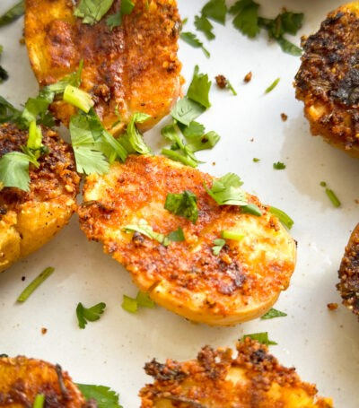

Parmesan Crusted Potatoes

Ingredients:
1/2 cup Butter
1/3 cup grated Parmesan cheese
Salt as per taste
2 lbs golden potatoes
3 tablespoon Pav Bhaji masala
1/2 tsp green chili paste
2 tablespoon red chili powder
5 cloves of fresh garlic chopped
1 tablespoon onion powder
Olive oil spray
1/4 cup chopped cilantro
1/2 cup mayo
2 tablespoon fresh lime juice
Process:
- Wash and cut potatoes in half, slice them horizontally.
- Score the potatoes using a paring knife in a grid pattern.
- Preheat oven to 415℉ and melt butter till its liquid.
- In a baking tray mix together 1/4th cup butter, salt, grated Parmesan cheese, fresh garlic,
onion powder, red chili powder and green chili paste.
- Using a spatula mix it until it forms a paste and spread it evenly on the tray
- Lay the potatoes on the tray upside down with the cut side facing down.
- Brush the potatoes with more butter and use cooking spray if needed.
- Bake them in oven for at 415 degree Fahrenheit at 25 minutes or until they are golden
brown and crispy
- Sprinkle fresh cilantro and squeeze fresh lime juice before eating them and can be paired
along with mayo